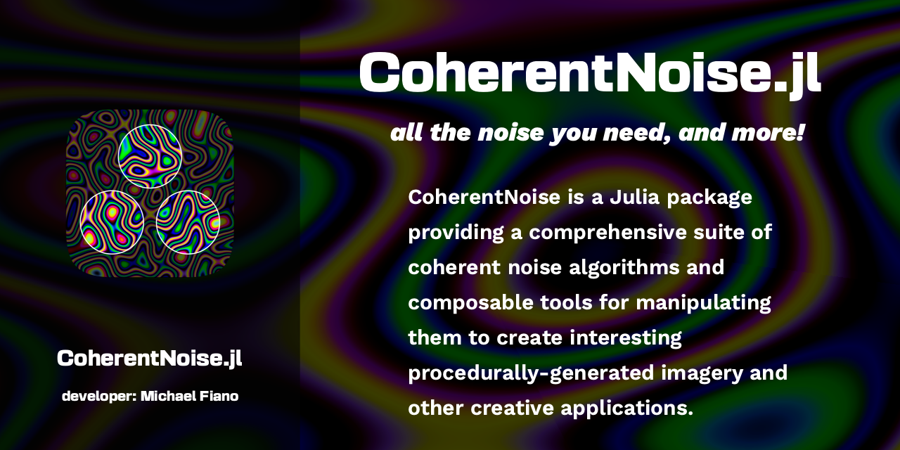

OverviewWhat is coherent noise?HistoryWhat's different from other libraries?Available samplersAlgorithmsPatternsNoiseFractalsGetting StartedInstallationBasic UsageTutorialFirst stepsVisualizing resultsModifiersPipelinesFractalsAdding colorGalleryUser CreationsAPI Reference